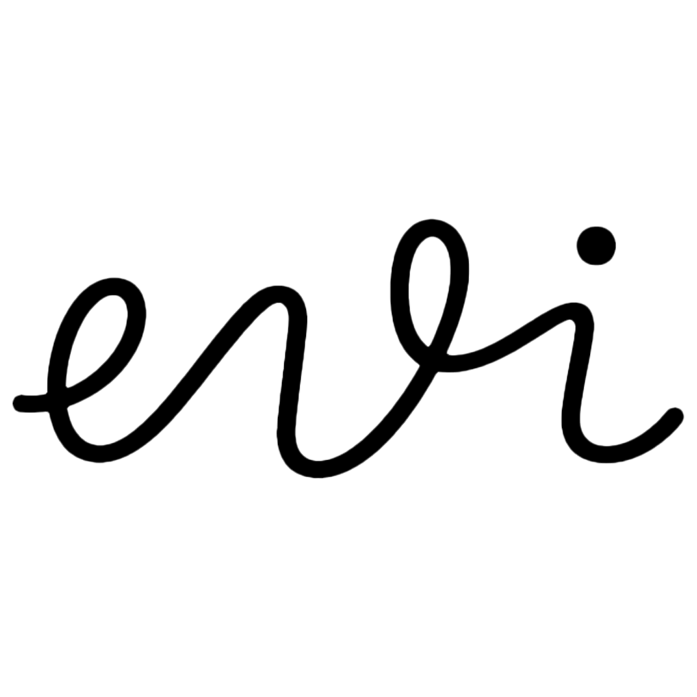
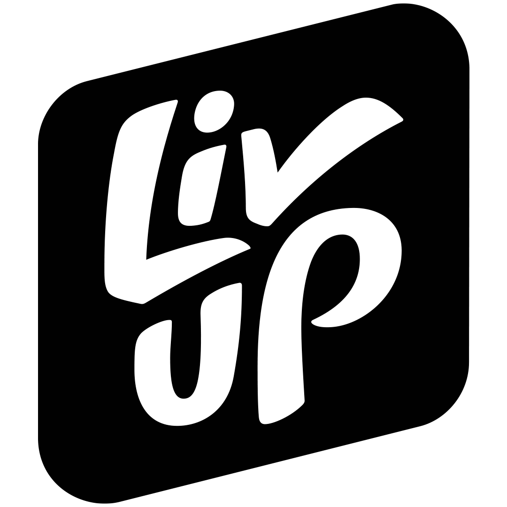
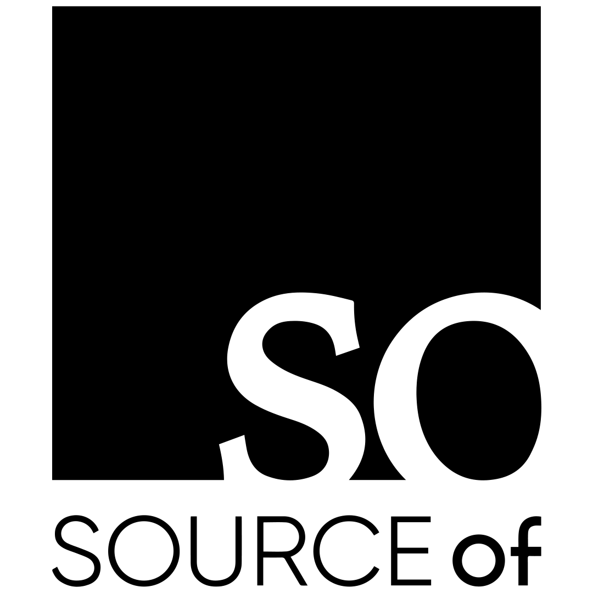

Criatividade não é inspiração.
É processo.
Produzimos criativos em volume e operamos mídia e criatividade como um único sistema. Performance vem de experimentação estruturada, não de sorte.
Agendar diagnóstico gratuito Sem compromisso. Resposta em até 24h úteis.

Volume é a nossa assinatura
EstáticoBenefício, prova social, infográfico. Dezenas por mês, com hipótese em cada um.
UGCDepoimento, review, antes e depois. Gente de verdade falando com gente de verdade.
Alta produçãoAnúncio editado e branded content, quando a marca pede peso.
Resultados que falam por nós



[MÉTRICA]
Marca DNVB pro-age contra o movimento anti-idade. Operação completa da máquina de aquisição: criativos, mídia paga e comunicação.